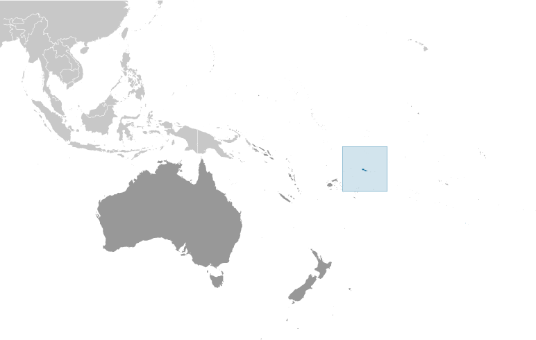
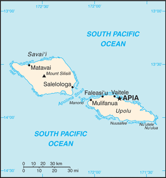
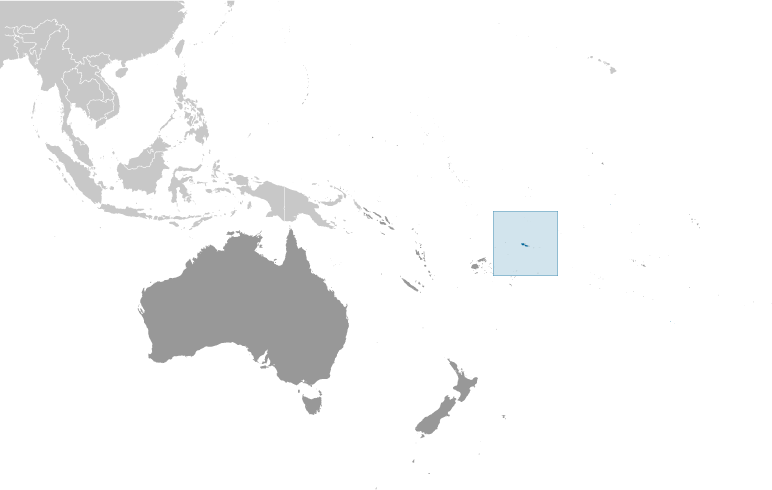
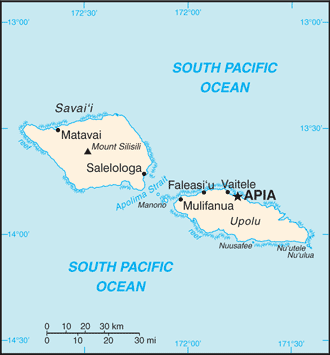

-
Introduction :: Samoa
-
Background:New Zealand occupied the German protectorate of Western Samoa at the outbreak of World War I in 1914. It continued to administer the islands as a mandate and then as a trust territory until 1962, when the islands became the first Polynesian nation to reestablish independence in the 20th century. The country dropped the "Western" from its name in 1997.
In the late 2000s, Samoa began making efforts to more closely align with Australia and New Zealand. In 2009, Samoa changed its driving orientation to the left side of the road, in line with other Commonwealth countries. In 2011, Samoa jumped forward one day - skipping December 30 - by moving to the west of the International Date Line so that it was one hour ahead of New Zealand and three hours ahead of the east coast of Australia, rather than 23 and 21 hours behind, respectively. -
Geography :: Samoa
-
Location:Oceania, group of islands in the South Pacific Ocean, about halfway between Hawaii and New ZealandGeographic coordinates:13 35 S, 172 20 WMap references:OceaniaArea:total: 2,831 sq kmland: 2,821 sq kmwater: 10 sq kmcountry comparison to the world: 178Area - comparative:slightly smaller than Rhode IslandLand boundaries:0 kmCoastline:403 kmMaritime claims:territorial sea: 12 nmexclusive economic zone: 200 nmcontiguous zone: 24 nmClimate:tropical; rainy season (November to April), dry season (May to October)Terrain:two main islands (Savaii, Upolu) and several smaller islands and uninhabited islets; narrow coastal plain with volcanic, rugged mountains in interiorElevation:0 m lowest point: Pacific Ocean1857 highest point: Mount SilisiliNatural resources:hardwood forests, fish, hydropowerLand use:agricultural land: 12.4% (2011 est.)arable land: 2.8% (2011 est.) / permanent crops: 7.8% (2011 est.) / permanent pasture: 1.8% (2011 est.)forest: 60.4% (2011 est.)other: 27.2% (2011 est.)Irrigated land:0 sq km (2012)Population distribution:about three-quarters of the population lives on the island of UpoluNatural hazards:
occasional cyclones; active volcanism
volcanism: Savai'I Island (1,858 m), which last erupted in 1911, is historically active
Environment - current issues:soil erosion, deforestation, invasive species, overfishingEnvironment - international agreements:party to: Biodiversity, Climate Change, Climate Change-Kyoto Protocol, Desertification, Hazardous Wastes, Law of the Sea, Ozone Layer Protection, Ship Pollution, Wetlandssigned, but not ratified: none of the selected agreementsGeography - note:occupies an almost central position within Polynesia -
People and Society :: Samoa
-
Population:201,316 (July 2018 est.)country comparison to the world: 185Nationality:noun: Samoan(s)adjective: SamoanEthnic groups:Samoan 96%, Samoan/New Zealander 2%, other 1.9% (2011 est.)
note: data represent the population by country of citizenship
Languages:Samoan (Polynesian) (official) 91.1%, Somoan/English 6.7%, English (official) 0.5%, other 0.2%, unspecified 1.6% (2006 est.)Religions:Protestant 52.6% (Congregationalist 29%, Methodist 12.4%, Assembly of God 6.8%, Seventh Day Adventist 4.4%), Roman Catholic 18.8%, Mormon 16.9%, Worship Centre 2.8%, other Christian 6.3%, other Protestant 2.4%, other 2.4% (includes Baha'i, Muslim), none 0.2% (2016 est.)Age structure:0-14 years: 30.67% (male 31,862 /female 29,875)15-24 years: 19.76% (male 20,413 /female 19,357)25-54 years: 36.68% (male 37,944 /female 35,893)55-64 years: 7.05% (male 7,223 /female 6,973)65 years and over: 5.85% (male 5,126 /female 6,650) (2018 est.)population pyramid: The World Factbook Field Image ModalAustralia - Oceania :: Samoa Print
The World Factbook Field Image ModalAustralia - Oceania :: Samoa Print Image DescriptionThis is the population pyramid for Samoa. A population pyramid illustrates the age and sex structure of a country's population and may provide insights about political and social stability, as well as economic development. The population is distributed along the horizontal axis, with males shown on the left and females on the right. The male and female populations are broken down into 5-year age groups represented as horizontal bars along the vertical axis, with the youngest age groups at the bottom and the oldest at the top. The shape of the population pyramid gradually evolves over time based on fertility, mortality, and international migration trends.
Image DescriptionThis is the population pyramid for Samoa. A population pyramid illustrates the age and sex structure of a country's population and may provide insights about political and social stability, as well as economic development. The population is distributed along the horizontal axis, with males shown on the left and females on the right. The male and female populations are broken down into 5-year age groups represented as horizontal bars along the vertical axis, with the youngest age groups at the bottom and the oldest at the top. The shape of the population pyramid gradually evolves over time based on fertility, mortality, and international migration trends.
For additional information, please see the entry for Population pyramid on the Definitions and Notes page under the References tab.Dependency ratios:total dependency ratio: 74.2 (2015 est.)youth dependency ratio: 64.9 (2015 est.)elderly dependency ratio: 9.3 (2015 est.)potential support ratio: 10.8 (2015 est.)Median age:total: 24.8 yearsmale: 24.5 yearsfemale: 25.1 years (2018 est.)country comparison to the world: 159Population growth rate:0.61% (2018 est.)country comparison to the world: 147Birth rate:20.2 births/1,000 population (2018 est.)country comparison to the world: 77Death rate:5.4 deaths/1,000 population (2018 est.)country comparison to the world: 181Net migration rate:-9.1 migrant(s)/1,000 population (2017 est.)country comparison to the world: 210Population distribution:about three-quarters of the population lives on the island of UpoluUrbanization:urban population: 18.2% of total population (2018)rate of urbanization: -0.47% annual rate of change (2015-20 est.)Major urban areas - population:36,000 APIA (capital) (2018)Sex ratio:at birth: 1.05 male(s)/female (2017 est.)0-14 years: 1.07 male(s)/female (2017 est.)15-24 years: 1.05 male(s)/female (2017 est.)25-54 years: 1.07 male(s)/female (2017 est.)55-64 years: 1.04 male(s)/female (2017 est.)65 years and over: 0.77 male(s)/female (2017 est.)total population: 1.04 male(s)/female (2017 est.)Mother's mean age at first birth:23.6 years (2009 est.)note: median age at first birth among women 25-29
Maternal mortality rate:51 deaths/100,000 live births (2015 est.)country comparison to the world: 95Infant mortality rate:total: 18 deaths/1,000 live births (2018 est.)male: 21.6 deaths/1,000 live births (2018 est.)female: 14.2 deaths/1,000 live births (2018 est.)country comparison to the world: 87Life expectancy at birth:total population: 74.2 years (2018 est.)male: 71.3 years (2018 est.)female: 77.3 years (2018 est.)country comparison to the world: 129Total fertility rate:2.64 children born/woman (2018 est.)country comparison to the world: 67Contraceptive prevalence rate:26.9% (2014)Health expenditures:7.2% of GDP (2014)country comparison to the world: 77Physicians density:0.34 physicians/1,000 population (2010)Drinking water source:improved: urban: 97.5% of populationrural: 99.3% of populationtotal: 99% of populationunimproved: urban: 2.5% of populationrural: 0.7% of populationtotal: 1% of population (2015 est.)Sanitation facility access:improved: urban: 93.3% of population (2015 est.)rural: 91.1% of population (2015 est.)total: 91.5% of population (2015 est.)unimproved: urban: 6.7% of population (2015 est.)rural: 8.9% of population (2015 est.)total: 8.5% of population (2015 est.)HIV/AIDS - adult prevalence rate:NAHIV/AIDS - people living with HIV/AIDS:NAHIV/AIDS - deaths:NAMajor infectious diseases:note: active local transmission of Zika virus by Aedes species mosquitoes has been identified in this country (as of August 2016); it poses an important risk (a large number of cases possible) among US citizens if bitten by an infective mosquito; other less common ways to get Zika are through sex, via blood transfusion, or during pregnancy, in which the pregnant woman passes Zika virus to her fetus
Obesity - adult prevalence rate:47.3% (2016)country comparison to the world: 8Children under the age of 5 years underweight:2.7% (2014)country comparison to the world: 105Education expenditures:4.1% of GDP (2016)country comparison to the world: 108Literacy:definition: age 15 and over can read and write (2015 est.)total population: 99% (2015 est.)male: 99.1% (2015 est.)female: 98.8% (2015 est.)Unemployment, youth ages 15-24:total: 19.1% (2014 est.)male: 15.6% (2014 est.)female: 25.3% (2014 est.)country comparison to the world: 68 -
Government :: Samoa
-
Country name:conventional long form: Independent State of Samoaconventional short form: Samoalocal long form: Malo Sa'oloto Tuto'atasi o Samoalocal short form: Samoaformer: Western Samoaetymology: the name "Samoa" is composed of two parts, "sa" meaning sacred and "moa" meaning center, so the name can mean Holy Center; alternatively, it can mean "place of the sacred moa bird" of Polynesian mythologyGovernment type:parliamentary republicCapital:name: Apiageographic coordinates: 13 49 S, 171 46 Wtime difference: UTC+13 (18 hours ahead of Washington, DC, during Standard Time)daylight saving time: +1hr, begins last Sunday in September; ends first Sunday in AprilAdministrative divisions:11 districts; A'ana, Aiga-i-le-Tai, Atua, Fa'asaleleaga, Gaga'emauga, Gagaifomauga, Palauli, Satupa'itea, Tuamasaga, Va'a-o-Fonoti, VaisiganoIndependence:1 January 1962 (from New Zealand-administered UN trusteeship)National holiday:Independence Day Celebration, 1 June (1962); note - 1 January 1962 is the date of independence from the New Zealand-administered UN trusteeship, but it is observed in JuneConstitution:history: several previous (preindependence); latest 1 January 1962 (2017)amendments: proposed as an act by the Legislative Assembly; passage requires at least two-thirds majority vote by the Assembly membership in the third reading - provided at least 90 days have elapsed since the second reading, and assent to by the chief of state; passage of amendments affecting constitutional articles on customary land or constitutional amendment procedures also requires at least two-thirds majority approval in a referendum; amended several times, last in 2015 (2017)Legal system:mixed legal system of English common law and customary law; judicial review of legislative acts with respect to fundamental rights of the citizenInternational law organization participation:has not submitted an ICJ jurisdiction declaration; accepts ICCt jurisdictionCitizenship:citizenship by birth: nocitizenship by descent only: at least one parent must be a citizen of Samoadual citizenship recognized: noresidency requirement for naturalization: 5 yearsSuffrage:21 years of age; universalJudicial branch:highest courts: Court of Appeal (consists of the chief justice and 2 Supreme Court judges and meets once or twice a year); Supreme Court (consists of the chief justice and several judges)judge selection and term of office: chief justice appointed by the chief of state upon the advice of the prime minister; other Supreme Court judges appointed by the Judicial Service Commission, a 3-member body chaired by the chief justice and includes the attorney general and an appointee of the Minister of Justice; judges normally serve until retirement at age 68subordinate courts: District Court; Magistrates' Courts; Land and Titles Courts; village fono or village chief councilsExecutive branch:chief of state: TUIMALEALI'IFANO Va’aletoa Sualauvi II (since 21 July 2017)head of government: Prime Minister TUILA'EPA Lupesoliai Sailele Malielegaoi (since 23 November 1998); Deputy Prime Minister FIAME Naomi Mata’afa (since 2016)cabinet: Cabinet appointed by the chief of state on the prime minister's adviceelections/appointments: chief of state indirectly elected by the Legislative Assembly to serve a 5-year term (no term limits); election last held on 4 July 2017 (next to be held in 2022); following legislative elections, the leader of the majority party usually appointed prime minister by the chief of state, approved by the Legislative Assemblyelection results: TUIMALEALI'IFANO Va’aletoa Sualauvi unanimously elected by the Legislative Assembly on 5 July 2017Legislative branch:description: unicameral Legislative Assembly or Fono (50 seats for 2016-2021 term); members from 49 single-seat constituencies directly elected by simple majority vote and 1 seat for a woman, added for the 2016 election to meet the mandated 10% representation of women in the Assembly; members serve 5-year terms)elections: election last held on 4 March 2016 (next election to be held no later than March 2021)election results: percent of vote by party - HRPP 89.8%, Tautua Samoa 4.1%, independent 6.1%; seats by party – initial election results - HRPP 44, Tautua Samoa 2, independents 3; post-election party affiliation – HRPP 47, (informal) opposition 3; composition - men 45, women 5, percent of women 10%Political parties and leaders:Human Rights Protection Party or HRPP [TUILA'EPA Sailele Malielegaoi]International organization participation:ACP, ADB, AOSIS, C, FAO, G-77, IBRD, ICAO, ICCt, ICRM, IDA, IFAD, IFC, IFRCS, ILO, IMF, IMO, Interpol, IOC, IPU, ITU, ITUC (NGOs), MIGA, OPCW, PIF, Sparteca, SPC, UN, UNCTAD, UNESCO, UNIDO, UPU, WCO, WHO, WIPO, WMO, WTODiplomatic representation in the US:chief of mission: Ambassador Aliioaiga Feturi ELISAIA (since 4 December 2003)chancery: 800 Second Avenue, Suite 400J, New York, NY 10017telephone: [1] (212) 599-6196 through 6197FAX: [1] (212) 599-0797consulate(s) general: Pago Pago (American Samoa)Diplomatic representation from the US:chief of mission: the US Ambassador to New Zealand is accredited to Samoaembassy: Accident Corporation Building, 5th Floor, Matafele, Apiamailing address: P. O. Box 3430, Matafele, Apiatelephone: [685] 21-631 (2018)FAX: [685] 22-030 (2018)Flag description:red with a blue rectangle in the upper hoist-side quadrant bearing five white, five-pointed stars representing the Southern Cross constellation; red stands for courage, blue represents freedom, and white signifies purity
note: similar to the flag of Taiwan
National symbol(s):Southern Cross constellation (five, five-pointed stars); national colors: red, white, blueNational anthem:name: "O le Fu'a o le Sa'olotoga o Samoa" (The Banner of Freedom)lyrics/music: Sauni Liga KURESAnote: adopted 1962; also known as "Samoa Tula'i" (Samoa Arise)
-
Economy :: Samoa
-
Economy - overview:
The economy of Samoa has traditionally been dependent on development aid, family remittances from overseas, tourism, agriculture, and fishing. It has a nominal GDP of $844 million. Agriculture, including fishing, furnishes 90% of exports, featuring fish, coconut oil, nonu products, and taro. The manufacturing sector mainly processes agricultural products. Industry accounts for nearly 22% of GDP while employing less than 6% of the work force. The service sector accounts for nearly two-thirds of GDP and employs approximately 50% of the labor force. Tourism is an expanding sector accounting for 25% of GDP; 132,000 tourists visited the islands in 2013.
The country is vulnerable to devastating storms. In September 2009, an earthquake and the resulting tsunami severely damaged Samoa and nearby American Samoa, disrupting transportation and power generation, and resulting in about 200 deaths. In December 2012, extensive flooding and wind damage from Tropical Cyclone Evan killed four people, displaced over 6,000, and damaged or destroyed an estimated 1,500 homes on Samoa's Upolu Island.
The Samoan Government has called for deregulation of the country's financial sector, encouragement of investment, and continued fiscal discipline, while at the same time protecting the environment. Foreign reserves are relatively healthy and inflation is low, but external debt is approximately 45% of GDP. Samoa became the 155th member of the WTO in May 2012, and graduated from least developed country status in January 2014.
GDP (purchasing power parity):$1.137 billion (2017 est.)$1.11 billion (2016 est.)$1.036 billion (2015 est.)note: data are in 2017 dollars
country comparison to the world: 204GDP (official exchange rate):$841 million (2017 est.) (2017 est.)GDP - real growth rate:2.5% (2017 est.)7.1% (2016 est.)1.6% (2015 est.)country comparison to the world: 133GDP - per capita (PPP):$5,700 (2017 est.)$5,700 (2016 est.)$5,300 (2015 est.)note: data are in 2017 dollars
country comparison to the world: 169GDP - composition, by end use:household consumption: NAgovernment consumption: NAinvestment in fixed capital: NAinvestment in inventories: NAexports of goods and services: 27.2% (2015 est.)imports of goods and services: -50.5% (2015 est.)GDP - composition, by sector of origin:agriculture: 10.4% (2017 est.)industry: 23.6% (2017 est.)services: 66% (2017 est.)Agriculture - products:coconuts, nonu, bananas, taro, yams, coffee, cocoaIndustries:food processing, building materials, auto partsIndustrial production growth rate:-1.8% (2017 est.)country comparison to the world: 180Labor force:50,700 (2016 est.)country comparison to the world: 192Labor force - by occupation:agriculture: 65%industry: 6%services: 29% (2015 est.)Unemployment rate:5.2% (2017 est.)5.5% (2016 est.)NA
country comparison to the world: 78Population below poverty line:NABudget:revenues: 237.3 million (2017 est.)expenditures: 276.8 million (2017 est.)Taxes and other revenues:28.2% (of GDP) (2017 est.)country comparison to the world: 95Budget surplus (+) or deficit (-):-4.7% (of GDP) (2017 est.)country comparison to the world: 166Public debt:49.1% of GDP (2017 est.)52.6% of GDP (2016 est.)country comparison to the world: 103Fiscal year:June 1 - May 31Inflation rate (consumer prices):1.3% (2017 est.)0.1% (2016 est.)country comparison to the world: 72Commercial bank prime lending rate:8.76% (31 December 2017 est.)9.09% (31 December 2016 est.)country comparison to the world: 95Stock of narrow money:$147 million (31 December 2017 est.)$131.7 million (31 December 2016 est.)country comparison to the world: 186Stock of broad money:$147 million (31 December 2017 est.)$131.7 million (31 December 2016 est.)country comparison to the world: 191Stock of domestic credit:$404.3 million (31 December 2017 est.)$389.5 million (31 December 2016 est.)country comparison to the world: 181Current account balance:-$19 million (2017 est.)-$37 million (2016 est.)country comparison to the world: 72Exports:$27.5 million (2014 est.)country comparison to the world: 207Exports - partners:Australia 22.9%, NZ 22.8%, American Samoa 22.1%, Afghanistan 14.9%, US 5.9% (2017)Exports - commodities:fish, coconut oil and cream, nonu, copra, taro, automotive parts, garments, beerImports:$89.29 billion (2018 est.)$312.6 million (2016 est.)country comparison to the world: 41Imports - commodities:machinery and equipment, industrial supplies, foodstuffsImports - partners:NZ 22%, Singapore 20.7%, US 12.5%, China 10.1%, Australia 8.6%, Fiji 5.2% (2017)Reserves of foreign exchange and gold:$133 million (31 December 2017 est.)$122.5 million (31 December 2015 est.)country comparison to the world: 180Debt - external:$447.2 million (31 December 2013 est.)country comparison to the world: 180Exchange rates:tala (SAT) per US dollar -2.566 (2017 est.)2.565 (2016 est.)2.565 (2015 est.)2.5609 (2014 est.)2.3318 (2013 est.) -
Energy :: Samoa
-
Electricity access:population without electricity: 10,942 (2012)electrification - total population: 94% (2012)electrification - urban areas: 100% (2012)electrification - rural areas: 93% (2012)Electricity - production:132 million kWh (2016 est.)country comparison to the world: 197Electricity - consumption:122.8 million kWh (2016 est.)country comparison to the world: 199Electricity - exports:0 kWh (2016 est.)country comparison to the world: 192Electricity - imports:0 kWh (2016 est.)country comparison to the world: 194Electricity - installed generating capacity:45,000 kW (2016 est.)country comparison to the world: 194Electricity - from fossil fuels:48% of total installed capacity (2016 est.)country comparison to the world: 155Electricity - from nuclear fuels:0% of total installed capacity (2017 est.)country comparison to the world: 176Electricity - from hydroelectric plants:23% of total installed capacity (2017 est.)country comparison to the world: 85Electricity - from other renewable sources:29% of total installed capacity (2017 est.)country comparison to the world: 20Crude oil - production:0 bbl/day (2017 est.)country comparison to the world: 194Crude oil - exports:0 bbl/day (2015 est.)country comparison to the world: 188Crude oil - imports:0 bbl/day (2015 est.)country comparison to the world: 190Crude oil - proved reserves:0 bbl (1 January 2018 est.)country comparison to the world: 190Refined petroleum products - production:0 bbl/day (2017 est.)country comparison to the world: 197Refined petroleum products - consumption:2,400 bbl/day (2016 est.)country comparison to the world: 191Refined petroleum products - exports:0 bbl/day (2015 est.)country comparison to the world: 198Refined petroleum products - imports:2,363 bbl/day (2015 est.)country comparison to the world: 187Natural gas - production:0 cu m (2017 est.)country comparison to the world: 192Natural gas - consumption:0 cu m (2017 est.)country comparison to the world: 194Natural gas - exports:0 cu m (2017 est.)country comparison to the world: 177Natural gas - imports:0 cu m (2017 est.)country comparison to the world: 183Natural gas - proved reserves:0 cu m (1 January 2014 est.)country comparison to the world: 189Carbon dioxide emissions from consumption of energy:341,100 Mt (2017 est.)country comparison to the world: 191
-
Communications :: Samoa
-
Telephones - fixed lines:total subscriptions: 8,454 (2017 est.)subscriptions per 100 inhabitants: 4 (2017 est.)country comparison to the world: 197Telephones - mobile cellular:total subscriptions: 124,211 (2017 est.)subscriptions per 100 inhabitants: 62 (2017 est.)country comparison to the world: 188Telephone system:general assessment: most households have at least one mobile phone; all businesses in the greater Apia area have access to broadband and Wi-Fi, which is reasonably reliable and fast, but relatively expensive; in rural Upolu and on Savaii Island there is limited availability of high-speed Internet and Wi-Fi; Samoa recently completed the installation of a National Broadband Highway that will provide fiber optic data services and 4G LTE cellular data speeds to the entire country; 4G LTE data speeds are operative and commercially available to limited areas; 4G Internet accessibility from cellular devices is currently available nationwide (2017)domestic: combined fixed-line and mobile-cellular teledensity roughly 70 telephones per 100 persons (2016)international: country code - 685; satellite earth station - 1 Intelsat (Pacific Ocean) (2015)Broadcast media:state-owned TV station privatized in 2008; 4 privately owned television broadcast stations; about a half-dozen privately owned radio stations and one state-owned radio station; TV and radio broadcasts of several stations from American Samoa are available (2009)Internet country code:.wsInternet users:total: 58,508 (July 2016 est.)percent of population: 29.4% (July 2016 est.)country comparison to the world: 188Broadband - fixed subscriptions:total: 1,692 (2017 est.)subscriptions per 100 inhabitants: 1 (2017 est.)country comparison to the world: 184
-
Transportation :: Samoa
-
National air transport system:number of registered air carriers: 1 (2015)inventory of registered aircraft operated by air carriers: 1 (2015)annual passenger traffic on registered air carriers: 270,908 (2015)annual freight traffic on registered air carriers: 0 mt-km (2015)Civil aircraft registration country code prefix:5W (2016)Airports:4 (2013)country comparison to the world: 188Airports - with paved runways:total: 1 (2017)2,438 to 3,047 m: 1 (2017)Airports - with unpaved runways:total: 3 (2013)under 914 m: 3 (2013)Roadways:total: 1,200 km (2017)paved: 1,105 km (2017)unpaved: 95 km (2017)country comparison to the world: 182Merchant marine:total: 10 (2017)by type: general cargo 4, other 6 (2017)country comparison to the world: 148Ports and terminals:major seaport(s): Apia
-
Military and Security :: Samoa
-
Military branches:no regular military forces; Samoa Police ForceMilitary - note:Samoa has no formal defense structure or regular armed forces; informal defense ties exist with NZ, which is required to consider any Samoan request for assistance under the 1962 Treaty of Friendship
-
Transnational Issues :: Samoa
-
Disputes - international:none
Australia - Oceania ::
Samoa